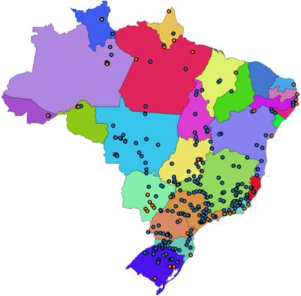
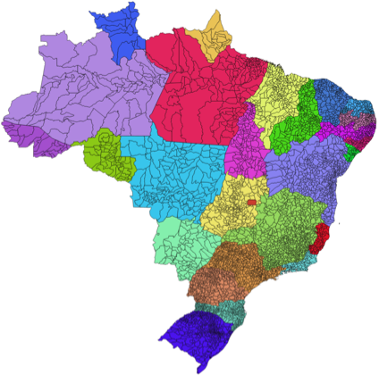

8.1. Introdução¶
A forma de modelar e representar os fenômenos geográficos no computador depende de sua percepção na forma de entidades discretas (objetos) ou campos contínuos.
Quando lidamos com fenômenos onde temos um valor definido para uma ou mais variáveis de observação em toda localização possível do espaço, estamos compreendendo tal fenômeno como um campo contínuo. Elevação, temperatura de superfície, risco de incêndio na vegetação, e radiância da superfície são exemplos de campos contínuos.
Quando percebemos o fenômeno em questão por objetos com fronteiras bem definidas e pertencentes a uma certa categoria, estamos compreendendo esse fenômeno como entidades discretas. Unidades de conservação estadual e federal, organização territorial, arruamento, trechos rodoviários, escolas, hospitais, linhas de transmissão de energia elétrica, são alguns exemplos de entidades discretas.
Para representar os dados dessas duas formas de conceitualização do espaço geográfico, em geral, utilizamos a representação matricial para fenômenos modelados como campos contínuos, e a representação vetorial para entidades discretas.
Nesta parte da aula estamos interessados na representação vetorial dos dados.
As entidades codificadas usando dados vetoriais são usualmente chamadas de feições (ou features). Nesse contexto, uma feição pode ser representada computacionalmente por diversas características, as quais chamamos de atributos da feição. Um atributo possui um nome, sendo associado a um determinado tipo de dado, como um número, uma sequência de caracteres (texto), ou uma data.
Além dos atributos alfanuméricos, uma feição é descrita por um ou mais atributos geométricos, associados a um tipo de dado geométrico. Um tipo de dado geométrico é capaz de representar elementos geométricos primitivos tais como pontos, linhas e polígonos ou coleções desses elementos.
A Tabela 8.1 apresenta alguns tipos de objetos geográficos representados por feições com representações geométricas de pontos (hidrelétricas e termoelétricas), linhas (logradouros) e polígonos (municípios brasileiros).
Hidrelétricas/Termoelétricas |
Logradouros |
Municípios |
|---|---|---|
 |
|
 |

{kind=link}